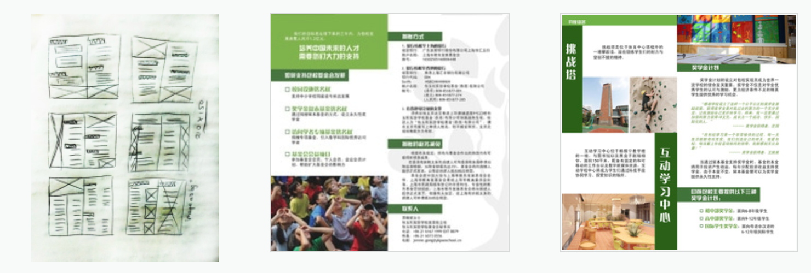
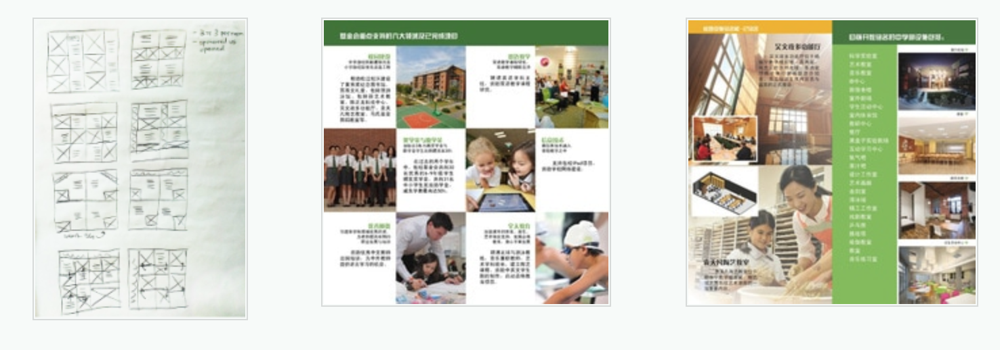

The first step to start the design process is to gather text content from the foundation department. In this document, content are organized into different chapters, therefore to aware the amount of the text is important before working on the layout.
To maintain the school's brand identity, I decided to adapt the brand color scheme that has been frequently applied to previous marketing materials. The green symbolizes the elements of growth and youth, yet the variety of tones implies the multi-dimensional principle that the school obtains in their education system.
For content-heavy sections, the use of images would be minimal, but variation of types could be applied to enhance hierarchy. For instance, The section which explained the method to apply for sponsorship were described in paragraphs and list forms. Hence, create a clean structure with some variety of text styling indicated levels of hierarchy among the texts. Whereas sections showcasing school's facilities focused more on imageries, therefore use of visual would be emphasized on those pages.
 One significant challenge I found was the balance between text and imagery in limited space. The amount of texts was specified by the Foundation Department and was expected to fit into certain pages, In addition, certain images were requested to be added onto specific pages. Hence, I would need to brainstorm multiple possibilities on the layouts and sketched various versions according to the length of the content and number of the images needed be included on the page. Since the content was broke into different sections, each one of them was designed in unique style in order to be distinguished from one another.
Completed brochure design can be viewed HERE.